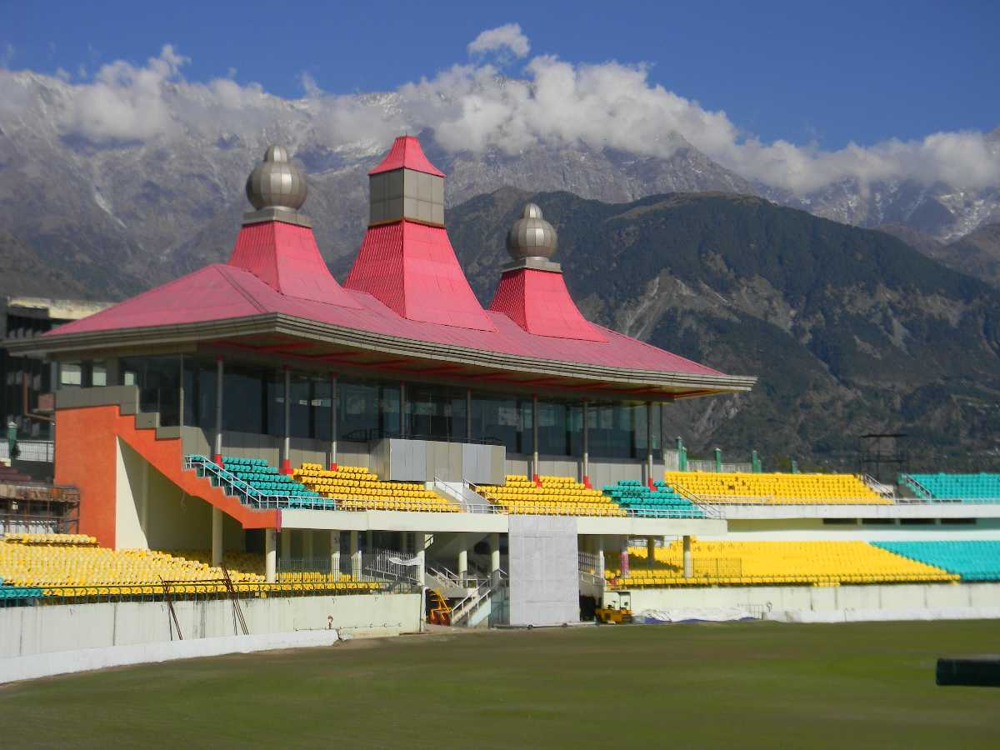

Nov 17,2021
All about Dharmshala Tourism
Dharamshala or Dharamsala city is located in Kangra district at 18 km from Kangra city in Himachal Pradesh. The state's winter capital, Dharamshala, is separated as upper and lower divisions with different altitudes. The lower division is the Dharamsala town itself, whereas the upper division is located 3 km away and is popularly known as Mcleodganj. Dharamsala is prominently
readmore